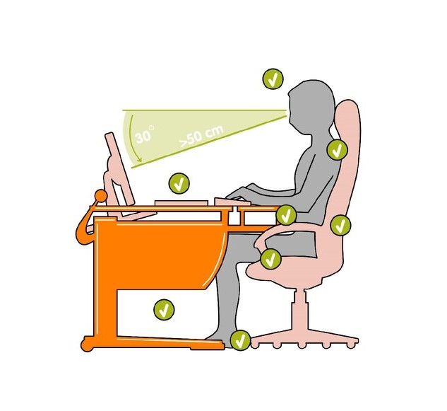

Введение в скоростную печать
Основы метода слепой печати и подготовка к обучению
Что такое скоростная печать?
Скоростная печать (или слепая печать) — это метод набора текста на клавиатуре всеми десятью пальцами без необходимости смотреть на клавиши. Этот навык позволяет значительно увеличить скорость набора текста, снизить утомляемость и сконцентрироваться на содержании, а не на процессе.
Профессиональные машинисты могут печатать со скоростью до 400-500 знаков в минуту. Обычный пользователь, освоивший слепой метод печати, достигает скорости 200-300 знаков в минуту.
В современном мире, где большая часть работы и коммуникации происходит через компьютеры, навык скоростной печати становится необходимым для эффективной работы и учебы.
Преимущества слепой печати
Высокая скорость
Увеличение скорости набора текста в 2-5 раз по сравнению с методом "поиска и клика"
Точность
Снижение количества опечаток благодаря развитию мышечной памяти
Концентрация
Возможность фокусироваться на содержании текста, а не на поиске клавиш
Эргономика
Уменьшение нагрузки на глаза и шею, более естественное положение рук
Универсальный навык
Применим во всех сферах, связанных с использованием компьютера
Продуктивность
Существенная экономия времени при выполнении ежедневных задач
Основы десятипальцевого метода
Десятипальцевый метод печати основан на распределении клавиш между всеми пальцами обеих рук. Для этого используется так называемая исходная позиция, или позиция покоя.

Исходная позиция: пальцы на клавишах ASDF и JKL;
В исходной позиции:
- Левая рука: мизинец на А, безымянный на S, средний на D, указательный на F
- Правая рука: указательный на J, средний на K, безымянный на L, мизинец на ;
- Большие пальцы: располагаются над клавишей пробела
Каждый палец отвечает за определенную группу клавиш. После нажатия клавиши палец должен вернуться в исходную позицию.

Распределение зон ответственности пальцев на клавиатуре
Структура курса
Наш курс по скоростной печати построен по принципу постепенного усложнения упражнений и разделен на следующие этапы:
-
Введение и подготовка
Вы здесь
Знакомство с методикой слепой печати, правильная посадка и постановка рук
-
Базовый ряд клавиатуры
Изучение клавиш основного (среднего) ряда: ASDF JKL;
-
Верхний ряд клавиатуры
Освоение клавиш верхнего ряда: QWERTY UIOP
-
Нижний ряд клавиатуры
Работа с клавишами нижнего ряда: ZXCVB NM,./
-
Цифры и символы
Освоение цифрового ряда и специальных символов
-
Интеграция навыков
Комбинированные упражнения на все ряды клавиатуры
-
Увеличение скорости
Упражнения на развитие скорости набора
-
Работа над точностью
Техники для повышения точности набора
-
Специализированные тексты
Практика на текстах различной направленности (код, формулы, иностранные языки)
-
Финальное тестирование
Проверка достигнутого уровня скорости и точности печати
Курс рассчитан на 4-6 недель при условии ежедневных занятий по 20-30 минут. Не рекомендуется практиковаться более 45 минут без перерыва, чтобы избежать усталости и закрепления неправильных навыков.
Правильная организация рабочего места
Перед началом занятий важно правильно организовать рабочее место. Это поможет избежать лишней усталости и предотвратить развитие профессиональных заболеваний.

Правильная посадка за компьютером
- Стул: Высота стула должна быть такой, чтобы бедра располагались параллельно полу. Спинка должна поддерживать поясницу.
- Стол: Локти должны располагаться под углом 90° или чуть больше. Запястья не должны быть напряжены.
- Монитор: Верхняя граница экрана должна находиться на уровне глаз или чуть ниже. Расстояние от глаз до монитора — 45-70 см.
- Клавиатура: Расположена так, чтобы руки от локтя до кисти располагались параллельно полу или под небольшим наклоном вниз.
- Освещение: Равномерное, без бликов на экране и клавиатуре.
Важно! Делайте регулярные перерывы! Каждые 30-45 минут работы рекомендуется делать 5-10 минутный перерыв. Во время перерыва встаньте, пройдитесь, сделайте простую гимнастику для глаз и рук.
Часто задаваемые вопросы
Сколько времени нужно, чтобы освоить слепую печать?
Для базового освоения метода обычно требуется 2-3 недели ежедневных занятий по 20-30 минут. Достижение высокой скорости (от 200 знаков в минуту) может занять от 1 до 3 месяцев регулярной практики. Важно помнить, что скорость приходит с практикой, а основная задача на начальном этапе — выработать правильные привычки.
Можно ли переучиться, если уже есть привычка печатать "своим" методом?
Да, можно, но это потребует дополнительных усилий. Первое время скорость печати может снизиться, что вызывает желание вернуться к привычному методу. Важно быть настойчивым и продолжать практику. Через 2-3 недели новые навыки начнут закрепляться, а скорость постепенно вернется и превысит первоначальную.
Нужно ли использовать специальную клавиатуру для обучения слепой печати?
Нет, можно использовать обычную клавиатуру. Однако для более комфортного обучения рекомендуется эргономичная клавиатура с механическими переключателями, обеспечивающая тактильную отдачу при нажатии. Также полезными могут быть клавиатуры с маркировкой клавиш по системе слепой печати или, наоборот, клавиатуры без маркировки для продвинутых пользователей.
Как быстро снижается навык без практики?
Если навык хорошо закреплен (после 2-3 месяцев регулярной практики), то он сохраняется на долгое время даже без активного использования. Скорость может немного снизиться, но базовая механика слепой печати остается. Регулярная практика помогает поддерживать навык на высоком уровне и продолжать совершенствоваться.
Подготовка к первому занятию
Прежде чем переходить к практическим упражнениям, выполните следующие подготовительные шаги:
-
Организуйте рабочее место
Настройте высоту стула и стола, расположите монитор на нужной высоте, обеспечьте хорошее освещение.
-
Выполните разминку для пальцев
Несколько простых упражнений: вращение кистями, сжимание-разжимание пальцев, растяжка кистей.
-
Проверьте положение клавиатуры
Клавиатура должна располагаться так, чтобы запястья были расслаблены, а предплечья параллельны полу.
-
Устраните отвлекающие факторы
Отключите уведомления, создайте спокойную атмосферу для концентрации.
-
Определите время для занятий
Выделите в своем расписании 20-30 минут ежедневно для практики печати.